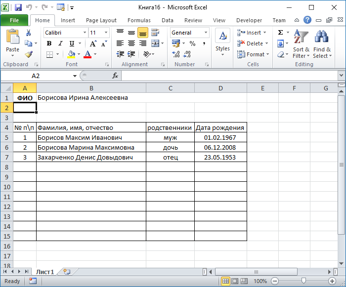

Код из примера:
Private Sub Печатать_Click()
Dim app As Object, wrk As Object
Dim iRow%, s$
Dim iRecordNO%
'--------------------------------------------------------------------------
On Error GoTo Печатать_Click_Err
Set app = CreateObject("Excel.Application")
Set wrk = app.workbooks.Open(CurrentProject.Path & "\Книга1.xltx")
With Me
app.range("B1") = !фамилия & " " & !имя & " " & !отчество
End With
iRow = 5
With Me.[родня подчиненная форма].Form.Recordset
'Debug.Print .RecordCount
.MoveFirst
Do Until .EOF = True 'Цикл до конца таблицы
iRecordNO = iRecordNO + 1 'Номер записи
s = "A" & iRow
app.range(s) = iRecordNO
s = "B" & iRow
app.range(s) = !фамилияР & " " & !имяР & " " & !отчествоР
s = "C" & iRow 'Форма родства
app.range(s) = !форма
s = "D" & iRow
app.range(s) = !датаРождР & " "
iRow = iRow + 1
.MoveNext
Loop
End With
'app.DisplayFullScreen = False
'app.WindowState = -4137 'во весь экран
'app.Visible = True
app.WindowState = 3 'во весь экран
app.Visible = True
Печатать_Click_Bye:
Set wrk = Nothing
Set app = Nothing
Exit Sub
Печатать_Click_Err:
MsgBox "Error: " & Err.Number & vbCrLf & Err.Description & vbCrLf & _
"in Sub: Печатать_Click in module: Form_главная", _
vbCritical, "Error in Application: " & Err.Source
Err.Clear
Resume Печатать_Click_Bye
End Sub
Результат:


MSA-2007 ( 40 kB) Пример